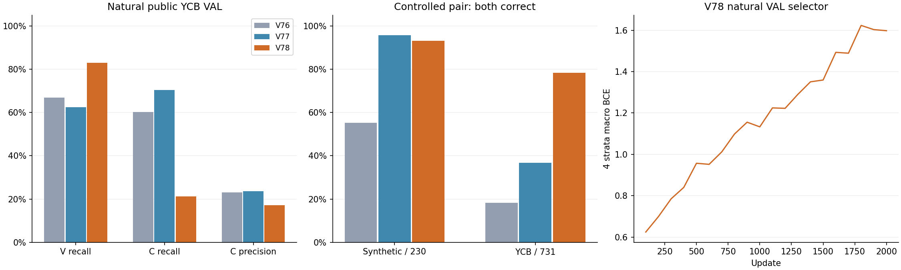
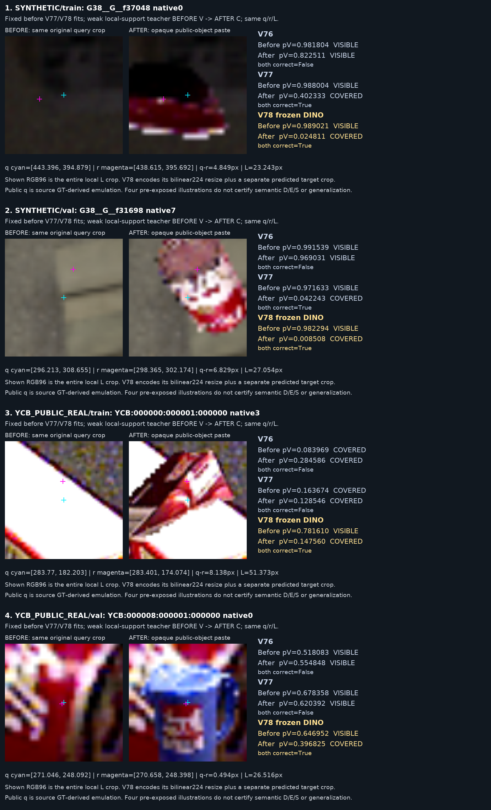

범용 DINO 특징도 고정한 공개 source 기준을 모두 충족하지 못했습니다. 가림 판별을 해결한 모델로 채택하지 않습니다.
공개 자연 YCB VAL에서 V precision 86.4%, V recall 82.9%, C precision 17.1%, C recall 21.3%입니다. 아래 V/C는 사람의 D/E/S가 아닌 참조 주변 support 약한 교사입니다.
사전학습 DINOv2 ViT-S/14의 가중치를 동결하고 48,929개 파라미터 head만 학습 1회·2,000 update 실행했습니다. 자연 VAL source×class 4집단 평균 BCE 최저 100 update를 선택했고 문턱은 0.5입니다. V77과 원본·가림 후 이미지, q/L/box, 라벨, 분할, query admission, 32+32+32 sampler, 최적화 조건을 유지했습니다. 현재 평가 223장 접근·추가 추론·학습·문턱 선택은 0회이며 PnP도 0회입니다.
합성 원본 1,003개와 공개 객체 4,200개(고유 원본 RGB 1,000장), 가림 후 4,799개로 구성된 10,002개 대상 단위 입력·80,016 query를 보존했습니다. 10,002개의 독립 촬영 영상을 뜻하지 않습니다. 같은 query 중심 RGB96과 예측 8점으로 정한 대상 crop128을 각각 bilinear224로 변환합니다. 마지막 16×16 DINO patch token에서 query 중앙 2×2와 local 전체의 유효 영역 가중 평균, 대상 crop 전체의 가중 평균을 읽습니다. head는 이 특징과 원래 42차원 query 배치·유효 영역 비율을 받습니다. 참조점·정답 mask·가림 anchor·source ID·사람 가림 주석은 forward에 제공하지 않습니다.
대상 crop은 초기 query box이며 정답 대상의 분리 mask가 아닙니다. 배경과 다른 물체가 섞일 수 있습니다. 새 표현·pooling·head·초기화를 함께 바꾼 후보이므로 DINO만의 인과 효과로 해석하지 않습니다. 작은 입력 crop에서 사라진 세부를 업샘플링으로 복원한 것도 아닙니다.
| 자료 / model | N | CM 행/열 C,V | V precision | V recall | C precision | C recall | BCE |
|---|---|---|---|---|---|---|---|
| SYNTHETIC / V76 | 1625 | [[162, 11], [30, 1422]] | 99.2% | 97.9% | 84.4% | 93.6% | 0.0946 |
| SYNTHETIC / V77 | 1625 | [[169, 4], [48, 1404]] | 99.7% | 96.7% | 77.9% | 97.7% | 0.1134 |
| SYNTHETIC / V78 | 1625 | [[145, 28], [109, 1343]] | 98.0% | 92.5% | 57.1% | 83.8% | 0.2066 |
| YCB_PUBLIC_REAL / V76 | 2018 | [[173, 114], [574, 1157]] | 91.0% | 66.8% | 23.2% | 60.3% | 0.6179 |
| YCB_PUBLIC_REAL / V77 | 2018 | [[202, 85], [651, 1080]] | 92.7% | 62.4% | 23.7% | 70.4% | 0.6799 |
| YCB_PUBLIC_REAL / V78 | 2018 | [[61, 226], [296, 1435]] | 86.4% | 82.9% | 17.1% | 21.3% | 0.5479 |
자연 VAL 전체는 합성 1,880점·공개 6,400점입니다. 같은 known/input/ref-in-crop 기준으로 합성 1,625점(C173/V1452), 공개 2,018점(C287/V1731)을 평가합니다. 교사 U는 합성187·공개4,299점으로 남겼고 음성으로 바꾸지 않았습니다. binary head의 유효 입력에는 학습된 confidence 보류가 없으며 U·입력 제외율은 모델의 신뢰도 보류율과 다릅니다.
| 학습 전 고정한 source 기준 | V78 | 기준 | 판정 |
|---|---|---|---|
| public_natural_C_precision_ge_0.50 | 17.1% | 50.0% | FAIL |
| public_natural_C_recall_ge_0.80 | 21.3% | 80.0% | FAIL |
| public_natural_V_recall_ge_0.80 | 82.9% | 80.0% | PASS |
| public_controlled_both_correct_ge_0.70 | 78.4% | 70.0% | PASS |
이 기준은 checkpoint 선택 규칙이 아닙니다. checkpoint는 자연 VAL의 고정 BCE 규칙 하나로 골랐고, controlled pair는 진단과 사전에 명시한 채택 기준에만 씁니다. 기준 통과 여부에 따라 문턱·seed·checkpoint를 다시 고르지 않았습니다. 통과하더라도 반복 공개 검증의 약한 라벨에서 성립하는 후보 조건이며 사람 semantic 가림 성능의 보증은 아닙니다.
| 자료 / model | N | CM 행/열 C,V | V precision | V recall | C precision | C recall | BCE |
|---|---|---|---|---|---|---|---|
| SYNTHETIC / V76 | 1552 | [[338, 148], [45, 1021]] | 87.3% | 95.8% | 88.3% | 69.5% | 0.2953 |
| SYNTHETIC / V77 | 1552 | [[475, 11], [83, 983]] | 98.9% | 92.2% | 85.1% | 97.7% | 0.1614 |
| SYNTHETIC / V78 | 1552 | [[462, 24], [131, 935]] | 97.5% | 87.7% | 77.9% | 95.1% | 0.2354 |
| YCB_PUBLIC_REAL / V76 | 1927 | [[436, 543], [279, 669]] | 55.2% | 70.6% | 61.0% | 44.5% | 0.7651 |
| YCB_PUBLIC_REAL / V77 | 1927 | [[738, 241], [331, 617]] | 71.9% | 65.1% | 69.0% | 75.4% | 0.5750 |
| YCB_PUBLIC_REAL / V78 | 1927 | [[781, 198], [183, 765]] | 79.4% | 80.7% | 81.0% | 79.8% | 0.4483 |

가리기 전후 q·참조점·크기가 같습니다. V77 전에 metadata로 고른 합성 TRAIN/VAL·공개 TRAIN/VAL 4사례를 그대로 사용했습니다. source 학습 사례도 포함하며 그림 네 개로 전체 정확도를 추정하지 않습니다.

목표는 native 가상 cuboid 참조점 주변에서 대상 support가 남았는지를 판별하는 것입니다. M0에 예상 support가 없는 경우는 U이며 외부 가림 C로 바꾸지 않습니다. native 참조점을 물리 mesh 코너로 이동하지 않습니다. 외부 가림·자기 가림·위치 오류의 원인 분류는 별도이며 이 binary head가 자기 가림 원인까지 학습했다는 주장은 하지 않습니다.
공개 query는 합성 TRAIN의 초기 오차를 적용한 source augmentation이며 실제 팔레트 초기 추론기 출력이 아닙니다. source VAL은 반복 개발 자료이고 DINO의 범용 사전학습 자료 전체와의 중복은 이번 실험에서 인증하지 않았습니다. 현재 223장은 직접 촬영했고 KU Leuven 자료와 무관하다는 사용자 확인을 보존했습니다. 현재 자료로 후보를 선택하지 않았습니다.
q-r≤3px·STRONG3×3 교사·참조가 중앙 셀(L∞≤1/18)에 있는 같은 공개 자연 VAL 535점을 그대로 비교했습니다. 큰 좌표 오차·crop 이탈·footprint fallback만으로 모든 잔여 오류를 설명할 수 없습니다.
| 같은 공개 VAL 고정 집단 | V 정답 / 459 | C 정답 / 76 |
|---|---|---|
| V76 | 247/459 (53.8%) | 46/76 (60.5%) |
| V77 | 242/459 (52.7%) | 49/76 (64.5%) |
| V78 | 357/459 (77.8%) | 17/76 (22.4%) |
DINO 후보는 보이는 점 115개를 V77보다 더 회복했지만, 가려진 점 32개를 더 놓쳤습니다. 자연 YCB의 C recall은 TRAIN 753/1019(73.9%)→VAL 61/287(21.3%)로 크게 떨어지는 반면, 합성한 공개 가림 전후의 둘 다 정답률은 TRAIN 77.6%·VAL 78.4%로 비슷합니다. 자연 가림 분포에 집중된 일반화 실패를 보여주며, 단순한 전역 과적합이나 라벨 정의 하나가 원인이라고 확정하지 않습니다. 저장 출력 해석 / 같은 좌표 집단 검산
미리 고른 실제 crop 4쌍은 이번 DINO 후보가 모두 맞혔습니다. 그럼에도 자연 가림 전체 recall은 21.3%이므로, 이 네 그림을 전체 전이 성공의 증거로 해석할 수 없습니다. 조건부 RGB 변화 반응과 자연 가림 일반화를 분리해야 합니다.
전 10,002행의 q/L/context와 17개 입력 속성은 원본과 정확히 일치했습니다. 동결 특징의 반복 추출은 일치하며, 저장 특징은 유한한 FP16입니다. 독립 FP64 canvas 비율과 GPU FP32에서 저장한 FP16 비율은 240,048개 중 144개에서 한 단계 차이가 났고 최대 절대 차이 0.00024414로 사전 전체 비율 bound 0.00048928 안에 들었습니다. 0 유효 영역 판정 변화는 없습니다.
별도 독립 검산의 최초 1e-6 token-weight 허용값은 실패 기록으로 보존했습니다. 이후 FP32 보간·평균 연산의 오차 상한을 도출하고 CPU/GPU 계산을 대조했습니다. 입력·라벨·모델·문턱·source 성능 기준은 수정하지 않았습니다. 이 수치 검산을 분류 성능 성공으로 해석하지 않습니다. 독립 특징 검산 / 연산 오차 상한
기존 공개·합성 M0/M4에는 dense 감독에 쓸 수 있는 대상 영역이 있습니다. 그러나 미리 고른 작은 표본에서는 원본 전체의 가림 영역이 query crop 안에 거의 들어오지 않는 사례가 나왔습니다. 전체 마스크 면적을 실제 crop의 학습 예제 수로 대체할 수 없습니다. 다음 단계는 같은 좌표·분할에서 모든 source crop의 V/C-support/예상 support 밖 영역과 실제 자연 가림 실패 crop을 검산하는 것입니다. 추가 모델·손실 가중치·새 학습은 아직 선택하지 않았습니다.
감독 데이터의 정의·가능 범위 / 다음 source 전수 진단 조건